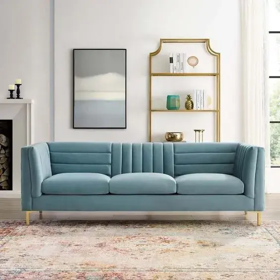

Tragedi "Showroom Sepi": Mengapa Gut Feeling Saja Bisa Membunuhmu?
Oleh Budi Santoso
Showroom mewah tanpa pengunjung adalah mimpi buruk setiap pebisnis furnitur.
Daftar Isi (Klik untuk melihat)
Bayangkan skenario ini: Kamu sudah menguras tabungan bertahun-tahun, mengurus izin usaha yang melelahkan,
menyewa ruko strategis di pinggir jalan protokol, dan mengisi showroom tersebut dengan deretan sofa
beludru mewah berwarna gelap yang menurutmu sangat elegan dan berkelas. Kamu merasa yakin karena
"feeling" kamu mengatakan bahwa orang kaya pasti suka gaya ini.
Namun, realitas memukul keras. Tiga bulan berjalan, yang datang hanyalah debu dan satu-dua orang yang
sekadar numpang tanya harga lalu menghilang tanpa jejak. Rasa sesak di dada saat melihat tumpukan stok
yang tak bergerak, sementara tagihan listrik ruko dan gaji karyawan terus berjalan, adalah mimpi buruk
yang sangat nyata.
Aku tidak ingin kamu merasakan penyesalan itu—perasaan "seandainya dulu aku cek dulu apa yang orang
butuhkan" di saat modal sudah terlanjur tertanam jadi barang mati. Di industri furnitur yang padat modal
(capital intensive), kesalahan riset bukan cuma bikin rugi waktu, tapi bisa bikin bangkrut dalam
sekejap. Itulah mengapa, riset pasar digital bukan lagi sekadar pilihan atau "bumbu" tambahan, melainkan
pelampung penyelamat sebelum kamu memutuskan untuk terjun.
Apa Sebenarnya yang Dimaksud dengan Riset Pasar Digital?
Mari kita luruskan dulu persepsinya. Riset pasar digital dalam dunia furnitur bukan berarti kamu hanya
duduk diam dan scrolling akun Instagram kompetitor sambil merasa iri. Itu namanya stalking, bukan riset.
Riset pasar digital adalah upaya sadar untuk membedah data yang bertebaran di internet—jejak-jejak
digital yang ditinggalkan oleh jutaan calon pembeli. Sebagai orang yang berkutat dengan dunia web, kamu
pasti tahu bahwa setiap ketikan di Google adalah sebuah niat (intent).
Search Intent: Apa yang orang ketik? Apakah "Sofa minimalis harga 2 jutaan" atau
"Sofa kulit asli Italia"?
Visual Interest: Apa yang sedang disematkan (pinned) orang di Pinterest? Apakah
gaya boho-chic atau justru industrial-modern?
Pain Points: Keluhan apa yang paling sering muncul di ulasan bintang satu Tokopedia
atau Shopee? Apakah masalah pengiriman, kayu yang gampang bubukan, atau warna yang tidak sesuai
foto?
Banyak pengusaha lokal yang terjebak pada idealisme buta. Mereka merasa tahu apa yang bagus karena sering
melihat majalah desain luar negeri. Padahal, pasar di Indonesia punya karakter yang sangat unik.
Misalnya, tren rumah minimalis di lahan sempit di daerah pinggiran Jakarta atau Surabaya membuat
permintaan akan furnitur multifungsi (seperti tempat tidur dengan laci bawah atau meja makan lipat)
melonjak tajam. Tanpa data digital, kamu mungkin tetap nekat memproduksi lemari jati raksasa seberat
200kg yang bahkan tidak muat masuk lewat pintu rumah cluster zaman sekarang.
Memahami Perilaku Konsumen Lewat "Jejak Digital"
Perilaku konsumen furnitur sudah berubah total dalam satu dekade terakhir. Dulu, orang datang ke toko
furnitur untuk mencari inspirasi. Sekarang? Mereka mencari inspirasi di TikTok atau Instagram,
membandingkan spesifikasi dan harga di marketplace, mengecek reputasi toko di Google Maps, baru kemudian
memutuskan untuk membeli.
Dengan melakukan riset digital yang mendalam, kamu bisa memetakan tiga pilar utama:
1. Kebutuhan Riil (Bukan Sekadar Keinginan)
Riset digital memungkinkan kamu melihat masalah yang sedang dihadapi orang. Apakah mereka sedang mencari
sofa yang kainnya tahan terhadap cakaran kucing? Atau meja kerja yang bisa diatur tingginya (standing
desk) karena tren WFH yang sudah menjadi gaya hidup permanen? Jika kamu menjual solusi, barangmu akan
lebih cepat laku daripada sekadar menjual "barang cantik".
2. Pergeseran Estetika yang Dinamis
Dunia desain itu volatile. Apakah gaya Japandi (Japan-Scandi) masih merajai, ataukah pasar sudah mulai
jenuh dan beralih ke gaya Mid-Century Modern yang lebih berani secara warna? Dengan memantau tren
pencarian gambar dan hashtag, kamu tidak akan terjebak memproduksi gaya yang sudah basi.
3. Pemetaan Daya Beli (Price Point)
Jangan menebak-nebak harga. Masuklah ke marketplace, filter produk furnitur berdasarkan "paling banyak
terjual". Lihat di rentang harga berapa penjualan paling deras terjadi. Jika kamu ingin bermain di
segmen ekonomis, kamu tahu batas atas hargamu. Jika ingin bermain di eksklusif, kamu tahu nilai tambah
apa yang harus ada agar harga tinggimu masuk akal.
Strategi Mengintip Peluang: Menjadi Detektif Data
Sebagai seorang web developer expert, kamu punya keunggulan teknis. Kamu bisa menggunakan tools yang
mungkin tidak dipahami pengusaha tradisional:
Google Trends: Jangan cuma lihat volume, tapi lihat tren regional. Mungkin di
Jakarta trennya adalah furnitur minimalis, tapi di daerah seperti Malang atau Solo, minat terhadap
furnitur kayu solid masih sangat dominan.
Keyword Research (SEO Perspective): Gunakan data untuk melihat long-tail keywords.
Jika pencarian "meja rias lampu LED" lebih tinggi daripada "meja rias kayu", maka kamu sudah tahu
fitur apa yang harus kamu tambahkan pada produkmu.
Competitor’s Comment Section Audit: Ini adalah tambang emas. Pelanggan yang kecewa
adalah guru terbaikmu. Jika banyak yang mengeluh tentang "sulit dirakit sendiri", maka kamu bisa
memenangkan pasar dengan menawarkan jasa rakit gratis atau membuat panduan video instruksi yang
super jelas (optimasi UX di dunia nyata).
"Pelanggan yang kecewa adalah guru terbaikmu. Temukan apa yang kompetitor gagal berikan, dan jadikan itu
keunggulanmu."
Menyusun Strategi Berbasis Data (E-E-A-T & QATEX)
Di dunia digital, kepercayaan adalah mata uang yang nilainya lebih tinggi dari saldo bank. Sebagai
praktisi SEO, kamu tahu pentingnya E-E-A-T (Experience, Expertise, Authoritativeness, Trustworthiness).
Bagaimana menerapkannya di bisnis furnitur?
Experience & Expertise: Tunjukkan proses produksimu. Tampilkan detail pemilihan
kayu, jenis busa yang digunakan, hingga teknik penyambungan kayu (jointery).
Authoritativeness: Jadilah otoritas di bidangmu. Jika data menunjukkan banyak orang
bingung membedakan kayu jati asli dan kayu jati belanda (pinus), buatlah artikel edukasi yang
tuntas.
Trustworthiness: Ini dimulai dari hal kecil yang kamu kuasai: Favicon yang
profesional, PageSpeed website yang kencang, dan UI/UX website yang clean. Jika websitemu saja lemot
dan berantakan, orang akan berasumsi bahwa furniturmu juga dibuat dengan asal-asalan.
Kontenmu harus memenuhi standar QATEX (Quality Content Content that is Excellent). Jangan cuma jualan.
Jawablah pertanyaan-pertanyaan sulit calon pembeli lewat kontenmu sebelum mereka sempat bertanya.
Meminimalkan Risiko Stok "Mati" dengan Validasi Digital
Dunia furnitur adalah bisnis tentang volume dan ruang. Setiap inci barang yang tidak laku di gudangmu
adalah biaya—biaya penyimpanan, biaya perawatan, dan biaya penyusutan nilai.
Sebelum kamu memproduksi 100 unit lemari baru, lakukanlah Validasi Ide (MVP - Minimum Viable Product)
secara digital:
Buatlah draf desain 3D yang sangat realistis (atau gunakan AI untuk generate visualnya).
Pasang iklan teaser di Instagram atau Facebook dengan target audiens yang spesifik.
Arahkan ke landing page sederhana (yang sudah kamu optimasi kecepatannya).
Lihat berapa banyak yang klik tombol "Ingatkan Saya" atau "Pre-Order".
Jika dalam seminggu responnya dingin, kamu hanya rugi biaya iklan kecil. Kamu tidak perlu menangis
melihat 100 lemari menumpuk di gudang. Kamu tinggal putar arah, cari desain lain, dan ulangi prosesnya.
Ini adalah cara cerdas berbisnis di era AI: Fail fast, fail cheap.
Infrastruktur Digital sebagai Wajah Bisnis
Sebagai penutup bagian ini, ingatlah bahwa riset pasar digitalmu akan sia-sia jika "toko digitalmu"
(website) tidak mumpuni. Di tahun 2026, konsumen sangat tidak toleran terhadap website yang lambat.
Optimasi Gambar: Furnitur butuh gambar resolusi tinggi, tapi jangan sampai
membebani PageSpeed. Gunakan format WebP atau AVIF.
Mobile-First: 90% orang riset furnitur lewat HP sambil rebahan atau saat jam
istirahat kantor. Pastikan navigasi katalogmu semulus mungkin.
Local SEO: Pastikan saat orang mengetik "toko furnitur terdekat", tokomu muncul di
"Lokasi fisik bukan lagi penentu utama. Di era ini, lokasi 'digital' (seberapa mudah kamu ditemukan
di Google) jauh lebih krusial."
Marketing digital membantu membawa trafik tertarget ke showroom Anda.
Tragedi showroom sepi bisa dihindari dengan menyeimbangkan kualitas produk fisik dan kekuatan
kehadiran digital. Jangan biarkan investasi miliaran Anda sia-sia hanya karena kurangnya visibilitas
di dunia maya.
Pertanyaan Umum (FAQ)
Apakah lokasi fisik masih penting?
Masih, tapi fungsinya telah bergeser dari sekadar tempat jualan menjadi 'Experience Center'
di mana orang melihat kualitas barang setelah menemukannya secara online.
Apa langkah pertama untuk meramaikan showroom?
Mulai dengan SEO lokal dan Google Maps agar orang di sekitar Anda tahu keberadaan showroom
tersebut.
Bagikan artikel ini:
Tentang Penulis: Budi Santoso
Budi adalah konsultan strategi interior dan bisnis di ZadakFurni yang berfokus pada
efektivitas operasional showroom.
Artikel Terkait Lainnya

Riset Pasar Bisnis Furnitur: Jangan Menyesal Salah Langkah!
Pentingnya riset pasar digital sebelum memulai bisnis furnitur agar tidak
rugi.